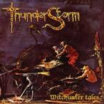

| Artist: | Thunder Storm |
| Title: | Witchunter Tales |
| Label: | North Wind Records NW CD/009 |
| Length(s): | 46 minutes |
| Year(s) of release: | 2002 |
| Month of review: | [01/2003] |
| 1) | Reality | 2.21 |
| 2) | Witchunter Tales | 6.10 |
| 3) | Parallel Universe | 8.21 |
| 4) | Edge Of Insanity | 0.41 |
| 5) | Inside Me | 4.03 |
| 6) | Unchanging Words | 6.05 |
| 7) | Star Secret | 5.59 |
| 8) | Glory & Sadness | 6.12 |
| 9) | Electric Funeral | 5.54 |